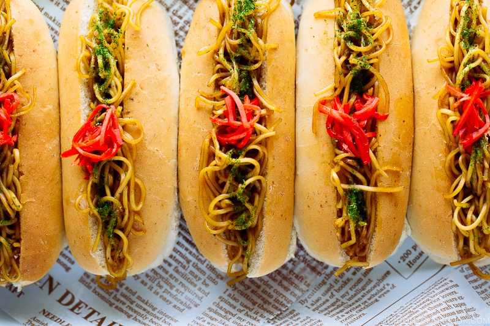

Yakisoba Pan

Yakisoba (焼きそば) is a well-loved Japanese stir-fried noodle dish, which is one of the classic street food. And if you are familiar with Japanese bakery Melon Pan and An-Pan, “pan” (パン) means bread in Japanese.
When these noodles are stuffed into the Japanese hot dog buns (we call Koppepan コッペパン), it is called Yakisoba Pan (焼きそばパン). Unusual this pairing may sound, Yakisoba Pan works out to be a delicious partner in crime, only in a sandwich form.
Ingredients
- 8 hot dog buns
- butter (for the buns)
- 1 Tbsp neutral oil
- 11 oz yakisoba noodles (2 5.5-oz packages)
- 4 Tbsp Worcestershire sauce
- 1 Tbsp oyster sauce
- aonori (dried green laver seaweed) (to serve)
- pickled red ginger (beni shoga or kizami beni shoga) (to serve)
- ▢Japanese Kewpie mayonnaise (to serve; optional)
Instructions
- Gather all the ingredients.
- Make a slit on top (or side) of 8 hot dog buns and spread butter (it will act as water-resistant).
- Cut 11 oz yakisoba noodles in half.
- Heat 1 Tbsp neutral oil in a large frying pan or cast iron skillet and cook yakisoba noodles while loosening it up.
- Season the noodles with 4 Tbsp Worcestershire sauce and 1 Tbsp oyster sauce. Mix all together and remove from the heat.
- Stuff the bread with the yakisoba noodles. Sprinkle aonori (dried green laver seaweed) and put a little bit of pickled red ginger (beni shoga or kizami beni shoga) in the center. Optionally, you can drizzle the top with Japanese Kewpie mayonnaise and Yakisoba sauce, if you‘d like. If you don’t eat it right away, wrap the sandwich with plastic wrap.
- You can use side-split hot dog buns, too.